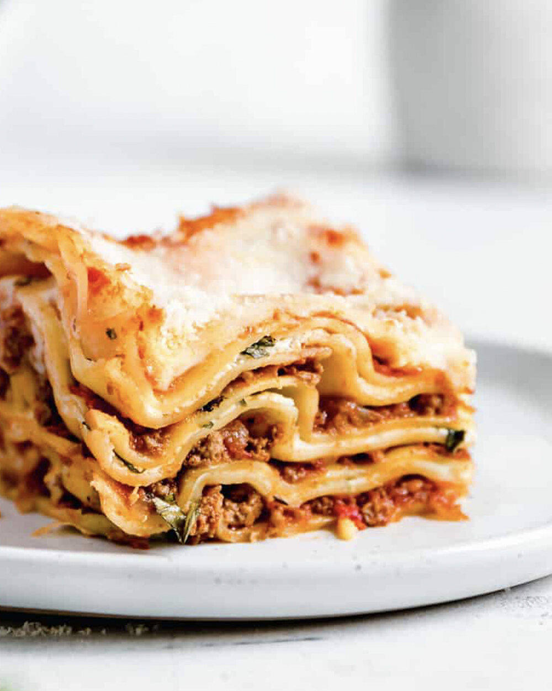
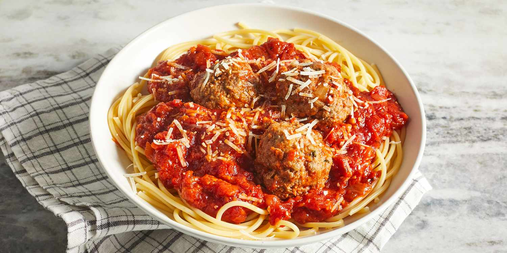

Lasagna

Yummy lasagna!
Ingredients
- Meat
- Onion and garlic
- Tomato products
- Sugar
- Spices and seasonings
- Lasagna noodles
- Cheeses
- Egg
Steps
- Make the meat sauce.
- Cook the noodles.
- Make the ricotta mixture.
- Layer the lasagna according to the recipe instructions.
- Cover with foil and bake.
- Let the lasagna rest before serving.
Spaghetti

Somebody toucha my spaghett!
Ingredients
- 1 pound ground beef
- 1 medium onion, chopped
- 4 cloves garlic, minced
- 1 small green bell pepper, diced
- 1 (28 ounce) can diced tomatoes
- 1 (16 ounce) can tomato sauce
- 1 (6 ounce) can tomato paste
- 2 teaspoons dried oregano
- 2 teaspoons dried basil
- 1 teaspoon salt
- ½ teaspoon ground black pepper
Steps
- Gather all ingredients.
- Combine ground beef, onion, garlic, and green pepper in a large saucepan over medium-high heat. Cook and stir until meat is browned and crumbly and vegetables are tender, 5 to 7 minutes. Drain grease.
- Stir diced tomatoes, tomato sauce, and tomato paste into the pan. Season with oregano, basil, salt, and pepper. Simmer spaghetti sauce for 1 hour, stirring occasionally.
- Serve hot and enjoy!